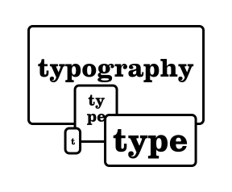

Last week, you went to London for the Future of Web Design conference. Can you talk about that? Why is this conference significant? You’ve been going for a few years and so maybe talk about your experience there.
Yeah I’d love to because it gets at the heart of one of the questions you sent to me, which was how I came to be so interested in the speaking and sharing and teaching aspect of this. While I was working at an old agency, one of the highlights that came out of working there was getting them to pay for my first trip to go to a Future of Web Design in New York in 2008. The way they run their conferences, at the time, was one track and it was just a big room. It was actually in the Roseland Ballroom, a pretty famous club in New York City in the Times Square area, and so it’s just a big room with a bunch of chairs set up. You really had no idea who might be sitting around you. Most of the speakers were sitting in the audience and watching the other speakers, and I remember getting into a conversation with Dan Mall, who is a tremendously well-known designer. At the time he was working at Happy Cog, which was Jeffrey Zeldman’s...
In Philadelphia?
Yeah. I think he was working for Happy Cog, which was Jeffrey Zeldman’s agency, so it is really connected with some of the biggest names in our industry. We just spent 15 minutes talking about subway maps. He was just the nicest possible guy, and all the other speakers were just as generous with their time—inviting attendees to go to the pub with them after the conference before we went off to that evening’s party. And that accessibility to the absolute biggest names in our industry was really remarkable to me. I think it was the next year or the year after, I had already paid my own money to go to the conference because I knew the agency wasn’t going to pay for it. And then, in between paying that money, two things happened. One, I quit, and decided to go work on my own. And the second thing was that I found out my friend Jesse Friedman, who works here in Providence and is a really talented WordPress developer, had been accepted to give a talk at Future of Web Design in New York at what they call their “Brand New Rising Star Track”. And that Rising Star Track is something they still do to this day to give speaking opportunities to people that have never spoken at a conference before but have an intriguing idea.
Hmm.
And I’m sure we’ll come back to this, but my background as both a designer, which is what I studied at school, but also as somebody that really built a lot of things—designing databases, doing .net coding, building complex content management systems from scratch—that gave me what I felt was a fairly unique perspective, and it’s still a fairly unique perspective in the industry. I thought I had something to share about that. When I heard that Jesse was doing this, I looked back at my blog, and I found something that I thought summed up what I really wanted to talk about pretty well. So I sent an email to Ryan Carson, who was the head of Carsonified (that was still the company at the time that owned Future of Web Design and put on the events) and to the other person who was in charge, her name’s Cat Clark (she’s since gone to Smashing Magazine) and I said, “I think this would be a great addition to your conference. I’d really love to come speak.” Within a day or two, they wrote back and said “Could you record a short video of yourself?”, which I did, and they accepted it right away.What they do with the Rising Star Track is that you don’t get paid to speak, but you don’t have to pay to attend anything. You can go to a conference, you can go to a workshop, which, in itself, is hundreds of dollars. I figured since I had already paid, this is just a bonus, getting the money back and just using that to pay for my hotel. And so that chance to go back and do what somebody else had done for me and try to inspire someone else to share an idea and take what they’ve learned and go back and do something interesting with it, was really compelling. I have a history of teaching in the family—my dad was a college professor, my brother is a professor, other teachers and various relatives—and I don’t really feel that I can take the time to teach a semester-long course, or at least not very often. But I’ve enjoyed it when I’ve done it, but this is a way to take that teaching opportunity and cram it into a day. Or an hour, and share something. But at the same time, be really present at that conference. And then be that person that Dan Mall was to me. Or Liz Danzico or Paul Boag or Jeffrey Zeldman. And that was fantastic. And so they invited me back the next year, because I was amazingly fortunate—it was the right title, the right topic, I don’t know what the combination was—but the room was packed and it was really well received, so that was pretty awesome. They invited me back the next year and then a couple years later, they asked me to come back to speak and do a full day workshop in New York, and that turned into London and Las Vegas coming up in June. They were my start, and since then, I’ve gone on to speak at a number of conferences all over the world. And I will always have a fondness for the way they handled that, and they still do. And I’ve been able to recommend people and give references and see them go on to give talks and get asked back again, and that’s really gratifying.
Awesome. I guess this time around, what would be one thing that you learned, or maybe one or two people, either Rising Stars, who are people that are focusing on the next part of what the Future of the Web is?
I’ve done a number of one-day workshops on Responsive Design and teaching the nuts and bolts of it. I also do a lot of speaking about the design approaches behind responsive design and how to think a little bit differently as a designer. Looking at it from both perspectives, what was really pleasantly surprising is that the group of attendees that I had for my workshop last week were incredibly sharp and had a lot more people coming to this with prior experience in responsive design. So we covered more material in that day and I had to make up material, so by the end of the day I was actually adding lessons that I wasn’t really intending to cover. Which was maybe a little bit trying, but that’s ok. A RISD grad, Mitch Goldstein, who is now teaching in Rochester, I think...
Yeah, RIT.
And he’s a good friend of mine and we started a company together before he went to RISD. I don’t know if this originated with him but he gave me the best quote that I have ever heard about being a teacher which is “to teach not to the slowest student in the class, but to teach just past the brightest one”, and I’m paraphrasing poorly but the idea of making sure that everyone is striving and everyone is helping each other to get to that goal means that no one’s bored but no one’s left unsupported. I thought that was a really great way to look at it. So I try to teach my workshops that way, I try and do my talks that way, because I think that this is our university. It’s really difficult to get a really good education about designing for the web. There are lots of great places to get an education about design but to understand the connections between how design is typically been taught and how we need to practice design today, I think that connection is not well made in many programs. And I’d like to see that change, but I think that there are some conceptual leaps that schools miss in how we’ve been thinking and teaching about design. As I will often say, any piece of design needs to do two things: It has to be something that can communicate an idea and it has to influence behavior. Any piece of design is a commercial endeavor, or it’s not a successful piece of design. And that’s been true to cave paintings telling people where to go find food, on through all kinds of things about maps that tell you where the monsters, to things today to get people to buy a particular brand of soap. But everything comes back to trying to convey that message and get people to act on it.That’s an aspect of design that is no different on the web than it is on print, but it has to be brought about and realized in different ways. Especially on the web when that means any number of a thousand different screen sizes. How do you still convey the hierarchy and meaning of that message in a medium and canvas that’s so fluid, but also has shifting proportions, and still get people to act on it? It’s absolutely the principles of design that apply, but you need to be able to act on them with a very different set of guidelines. I think that’s the gap.And I don’t think you can say that you can teach design and not address that head on, and include designing for the web and for multiple screen sizes explicitly. Anymore than we can say, “this project has to be printed out and put up on the wall so we can critique it”, so there’s an inherent bias there towards print. Like it or not, that’s what all the faculty knew, that’s what they grew up with, that’s built-in. It may not be explicit and they may try to do their best not to be overt about it, but ultimately it’s things being put up on the wall and critiqued. So that’s done on a CMYK printer, and you can’t avoid it. And you have an exacto knife because you cut things out and mock them up, simulating die-cuts. So we do all of these things, I’ve done it, too, and I still have some of them on my bookshelf because I love to see the things that I made. But that has to change for us to think about how design is applied and how we can successfully communicate our client’s message across every device and medium and platform—billboards to business cards to websites.
What is that mental shift that we need to have starting from the first time you learn about graphic design or learn about typography? I’ve worked at a startup in San Francisco, and the challenge for me was to start to think in a smaller screen size and not being able to do the same things technically with print that you’re used to…
Right, it comes back to block diagrams. On that small screen, you can have fewer elements, so the scale changes that you need to present there in order to preserve meaning can be much more subtle. That’s the biggest area of research and writing for me lately is looking at typography and responsive design and how the meaning of this level heading versus this level heading versus this body copy versus this callout. [And looking at] how exaggerated these things need to be on the large screen, because you have so many other distractions. In order to have the right volume for any given element to say it is more important, that scale has to be more exaggerated. Versus on that small screen, you don’t see the extra navigation, you’re probably not seeing the ad, you’re really looking at headline and copy, or maybe its a series of headline and copy. You can be much less heavy handed.
So it’s actually a scale change. In print design or designing for the desktop, you can go by [Robert] Bringhurst’s Elements of Typographic Style almost explicitly, and things will work really well. It looks really exaggerated on a small screen, so just bring the scale down.Body copy, I think should stay the same. I’m a big advocate of that, and I know a lot of people have talked about different ways about how to handle that dynamically, but I don’t agree with it because I think the device makers have done a really good job of addressing that. So I leave that alone.
I noticed that actually. It was on the exercise website you put together, and I shrunk the screen and I was like, oh ok, the body copy is not changing.
So physically, it is different from one device to the next, but the device manufacturers have come up with their own decisions about what one unit, base unadulterated unit of type should be. And on desktop browsers, the equivalent of that is 16 pixels and that is a relative, it’s a fixed unit of measure that renders differently on every single device because what 16 pixels is changes, but oddly enough, when you set the font-size to 100% on the base HTML tag, that will render text at the equivalent of 16 pixels on every device, so that’s kind of the leveler. What that renders at on a phone tends to yield a fairly nice readable size of text. And it will get you a line-length, if you’re using most of the width of the screen, that is very close to the low end of [Robert] Bringhurst recommends for newspaper columns. It’s pretty close. It’s like 35 to 40 characters, roughly, as opposed to the 40 to 50 he would recommend.But by making the text any smaller than that, it can very often start to collapse and get very muddy. So I tend to leave that alone because I think it’s close enough.With regard to making other changes, I’ve gotten into some discussions with some people that have advocated this, and I just have to say I disagree with them, because anything that we’re doing to dynamically change the size of the body copy based on reading distance is going to draw a significant amount of resources form the device, so you’re compromising the longevity of the use of the device in something that most people would simply adjust their arm. And we can’t accommodate for their eyesight either, so if I’m wearing my contacts I have to hold it further away, if I’m wearing my glasses I can keep it a little more closer, more comfortably, and that’s fine. And I don’t care, but I do that automatically and so does everyone else. So the pad, the tablet, the desktop, that’s a physical device that you can pull closer or push further away so it fits your comfort, but that’s not something that you could know as a designer about me. I don’t need you to waste time on that, I want you to focus on other issues.So I think we have to draw lines some places, and say that the device manufacturing is better here. But I can take that as a given and adjust my scale for other elements on that to be more subtle, so that you can see, as that proportion changes, you still know that this is an H1 heading, you still know that this is the most important thing on the page, you still see that callout as something different from the rest of the page. But it doesn’t have to fill the entire screen. Because things are going to wrap, and line-height is pretty important, so as things wrap you have two line headings it still makes sense, but it will wrap better if it’s not quite so big with one word per line.That was something that was an article I was working on with an editor from Typecast for about a year. And we would get busy and kind of go away from it and then come back. I kept putting it up on the screen at Artifact conference, first in Austin in May and then in Providence last fall, and you know the article is going to be up there some time but here’s the preview of something I’m working on. That article went up and the response to that article was better than anything I’ve ever written, anything I’ve ever put out there, and I’ve been told that it’s by a factor of 2, the most popular post they’ve ever put out. And they’re awesome, so they invited me back to do a webinar and they’ve just been really great to work with and it just struck a chord. And that’s how I’ve been framing a lot of things I’ve been writing and speaking about, because it’s clear that people are really looking for better guidance about how to deal with type when that is such a big factor with how we communicate design and ideas across all these screens.
My next question is around experimentation for this stuff. At some point you have to try it out, but I’m not going to have the google glass or big tv to test with all the time. Is it just agreeing on certain things you’re going to tackle and leaving the other things, like the body copy, to the device?
There are a few ways to tackle it and this is a problem that’s common for everybody that’s doing responsive design. Simulators can help, so I have an Android simulator and iOS simulator. And that allows me to see what things would look like on various sized iOS devices as well as different Android devices and different versions of Android OS. I try and make sure that we hang on to older devices, instead of getting rid of them all the time. So we’ve got a small pile of old cell phones, or things that I’ve picked up from friends or eBay, couple different sized iPads, an old Kindle Fire, an old Android phone. So I’ve got a variety of things that I can turn on and see how they look. On the larger screen stuff, a lot of times that’s easier to deal with than a lot of people think because a lot of us have access to a 27-inch monitor that’s pretty high resolution. So open it all the way up and see what you can do. And that was actually Jesse Friedman’s talk the second time we went to Future of Web Design. He brought up the idea of what to do with larger and desktop size screens. The example that he gave was a blog—why not bring the comments up next to the blog post instead of underneath? And I really thought that was fascinating because it changes the context in which you read the blog by being able to see the comments at the same time. It impacts the way you understand the content and take it in just by positioning things differently.Nick Sherman (a type designer for Font Bureau) has talked a lot, recently, about typography in responsive design on large screens by being not afraid of making the type bigger. So if it’s a really big screen, chances are that people are further away. Actually, that’s an example where it may make a lot of sense to make the body copy, bump it up, you know 25 percent or 50 percent if it’s on that big a screen. And also to look at display faces instead of just making body copy larger.So you can do some really interesting things with that that I’ve really only begun to experiment with. What a lot of us forget is that a lot of the large screen, flatscreen televisions that we might have in our living room have an HDMI input that we could plug our computers into, so actually, it’s not so hard. If you have an Apple TV, you don’t need to plug anything in, you can just flip your screen over and start displaying that way.So there are ways that are relatively cheap and easy. Simulators are mostly free, so you can test a lot of things that way. Old phones you can usually get your friends to give you if they’re getting a new one rather than getting $10 bucks back from Gazelle or whatever. You can accumulate your own little lab, and then you can also talk to other friends and designers in the area and see what they have. Some places have formalized it into a device lab. I don’t think anybody around here has actually done that, but my friend Steve Croft and I have a pretty good device collection that we bring to the workshops that we do, so we usually have a dozen different things that people can play with. So it’s getting a little creative with it.
At the heart of responsive web design, as far as I understand, is essentially media queries in CSS, would you agree with that? There is the relative sizing aspect and then the ability to have these break points when the browser tells you what device you’re on. When was that introduced?
I think Ethan Marcotte first wrote about it in 2009. Then his book came out in 2011. And it came out, I remember getting a copy of the book somewhere around May, and I was working with a startup here in Providence building websites for independent schools—that’s actually where my wife and I first worked together, we’ve been married nine years this summer, but this was the first time we’d actually work together—and I remember getting that book. We had a huge number of sites that we needed to start the actual HTML and CSS portion of, we had been working on IA [information architecture] and building up the content structure and everything. We had seven sites that we had to do the theming on starting in August, and they all needed to launch by the end of the September, or something crazy like that. Naturally that seemed like the best time to try something completely new [laughter], so I took the base theme that we were using and I rewrote it the first weekend in August as a responsive theme and we did every single one of those sites and every one since as a responsive site. And that actually made the process easier, I think, because I had so many upon which to test these things out and work out the ideas. That base theme ended up being the basis for about 35 more sites that were all built around the same code base. And it would evolve and get better, but there’s the baseline being responsive centers around using media queries to react to different device window sizes and making everything sort of flexible and fluid first.You know, kind of the running joke is the first websites were responsive because there were no tables. But that’s actually not true. They were fluid. So you would open the window different widths and you would have different line-length of text, that’s only one piece of it. It needs to be fluid so that it can scale but then you need to do things at different sizes, because then your line length is going to get too long and the design is not really going to hold up, so you need to start to reflow things, And that’s where the media queries really start to come in. That’s Ethan Marcotte’s book, covering those three things. You’re going to make the grid scale, you’re going to make the media that you place in, either videos or images, scale along with it, and then with media queries you’re going to make layout decisions based on available screen real-estate, and that’s kind of the base line.I think, as an industry, that’s kind of where we are now. We understand the basics of responsive design and far beyond just those three basic things, we’re doing some amazing stuff, but from a design perspective, we’re just getting familiar enough with responsive design to just get past a bunch of scaling boxes on the screen. Which I think is a fair criticism to level at a lot of sites, because there’s a huge amount of technical know-how that has to go along with the design thinking in order to make all of this work really well, and the tools are really only now just staring to become commonplace to help us tackle that.
Such as?
Such as visual tools that we can play with like Adobe’s Reflow or Macaw or Brackets, I mean there’s a bunch of different sketching and design tools that will help us prototype these ideas. Then there are these other things that help us code them more efficiently. So working with Bootstrap or Foundation, working with SASS instead of writing your CSS all on your own. Sass or LESS are preprocessing languages that let you use variables and math and all kinds of other things. So you don’t need a calculator to make a responsive site, you can use a formula. And those things help us as designers because there are shorthand, so we don’t have to write everything fully from scratch.But I think what I should back up and say, because I am being very conscious in saying designers are doing this, because I think designers have to do this. And I re-quote Jeffrey Zeldman every chance I get: “Real designers code.” They have to. And I think that again comes back to the issue that I have with the way design is taught. There’s this resistance to that being a skill-set that designers need to have. And I think that as much as we have to have an understanding die-cut and vellum and overprinting and metallic inks and all those things in order to do really great print work, you really need to understand HTML and CSS in order to think through design challenges in the native medium.I don’t often design in the browser, even though I’ve been doing this for 20 years. I wrote my first HTML 20 years ago this year, and I still oftentimes don’t feel that I’m good enough, I still sketch faster, because I’ve been using Illustrator almost that long, I still work in Illustrator faster. So many times, that’s how I work out my ideas. But I know I don’t know what they’re really going to look like until I get it into a web browser. So it was actually just this week that has been the most successful experience of designing in the browser and it’s because it’s a very data heavy project. I had to nail those patterns of representing these search results, and so I wrote those first, and then started building them into a larger page to test out these language ideas to see if I could visually create units out of these small units and make the mass of them on the screen still read as chunks without starting to draw boxes around everything, because I think that just creates more noise. It’s one way we do things but it creates more visual tension between the objects than it does allowing them to focus on the objects themselves. So that’s probably the only time where I’ve been far more successful there than I ever could have been trying to design this whole layout in Illustrator and make it translate.
So that’s a nice way to talk about what this interview is for: our class HTML Output. Central to the class is the idea that the browser is going to be, or is, a tool that a designer can use, that we’re gaining a lot of capabilities that Illustrator and Photoshop have been traditionally used to do, so we can use the browser as our own experimental plaything, you know? You said you just sketch faster in Illustrator. Are other people comfortable with the browser as this thing they can just go into right way, or not? Or is it just a personal thing, have you broken that down a little bit as to why that is?
If you look at all the writing about web design and development over the last number of years, there are plenty of people that write about design in the browser. And one would hope that the people writing about it and saying it’s so great actually do it. So if you take that, then there are plenty of people that think that way. And I think that’s fair because there are lot of people around my age that maybe didn’t start in Illustrator as soon as I did, and they may still work better with markers, and they may be brilliant with doing design and blending colors and working very fluidly that way, and I’m not one of them. My sketches in my sketch book are usually really rough, but I always have them. I have them all the time. I have a stack of them going back to even while I was in school but I always have a little notebook with me [takes out sketchbook] that I can just jot down ideas in, and very often it’s actually the writing that’s more important than anything that I’m sketching in there, but I can go back and see the genesis of almost every project that starts on paper. And I think that people that started later, people that started 10 years ago and were working in HTML right away, may be thinking more fluidly there than I am. And with a lot of these tools, like SASS and Compass and mixtures that you can use that are jump starting getting elements on the screen or using a framework like Foundation or Bootstrap. It allows you to not think about how to put these elements on the screen, just worry about how you’re placing them and then styling them from there. And there are lots of hooks built into those frameworks in order to do that.So I think that there will be more and more designers that have the tools to think more fluidly in the browser. And I think what that affords you, when it’s not an impediment to creative thinking, it can open your eyes to new opportunities. And I think that’s really the key, is however you can think and realize it the fastest is the right medium to work in.But I’ve also now seen that that’s not always going to be the same answer, because the project may dictate that one approach is better than the other.
So we’ve talked about the @media queries, and in this whole responsive design framework we consider screen sizes, mobile, tablets, all the way up to huge tvs. Where does print come into this? Where do print style sheets come in and how are the technologies incorporating the fact that sometimes we may still need to print out articles or webpages or what have you?
There’s almost always a print style sheet that goes in there, and ironically enough, that was the first use of the media query, and that’s been around for years, but it’s essentially exactly the same idea. Instead of saying its for screen and minimum width do this, you’re saying it’s for print, so any time somebody that hits print, that’s the last style sheet loaded and so that kind of takes over. And what most people do with that is really just strip out a lot of color elements, strip out a lot of background elements, they might change type size and just simplify the layout for what’s being printed so that what’s being printed is really just content. And in many cases, that’s the ideal way to do it. The irony was that yesterday, I couldn’t easily make a print of this design to show the client. I had to show it to them on screen, because if I tried to print it, I’d lose all the stuff.So it’s not without its challenges because it’s an imperfect solution to mix the measurements. It’s really hard to say and know concretely that I would like this to print 12 point, because that’s still the measurement system that matters in print. And I’d like to lay out the page in this manner with these margins because you don’t actually have that much control. Even for something as simple as the CSS command to create a page break is implemented differently in different browsers. So it’s a real pain.For Bay View Academy here in Rhode Island, we built an online ticketing system for their auditorium. They sell the tickets to all their seats to their auditorium and they always need to print out the unsold ones to sell them at the door. So we built something with a print style sheet in order to print out so many tickets per page. This is a challenge I need to sort out in the next few days: they want to use perforated sheets, and they’re different dimensions. So I have to see if I can make this work to say that when we hit print from this page, strip out all these other elements, after so many records, insert this page break, I want everything to be this size, and to see if I can get that to print on some Avery perforated paper. Not sure how well it’s going to go [laughter]. But, I know that if I did it out of chrome and saved it as a pdf, I could reliably get three to a page with the page break where I want it every time, and then she would be able to take a stack and slice, slice, there’s her stack of tickets. This will take that a step further, but dealing with print is still a very real thing. That’s a system that’s been built in the last year and half, and that’s a major component of it. The people get an email that needs to print with formatted tickets, and people can also print out a chunk of tickets together and have that still look like something.
But do we have to consider it as automatically stripping out stuff? You can strip out and have content and still make it look beautiful in the way that you do the type—
Absolutely, and I didn’t mean to cut you off, but there are certain things that don’t print reliably. Oftentimes on the web, when we’re trying to build this design, a combination of images are placed in the foreground or textures in the foreground, as well as things applied in the background, and it’s the interaction between those things that give some of the most interesting designs. Background printing is a checkbox option in most browsers and they don’t all default on or off. So you don’t really know. That’s why the approach tends to be: use less ink, less toner, strip it back to the content that they need to see.You print out this news article, and it still has a nicely typeset header and body copy and the inset photographs that are elements placed on the page will still print, and you can do some pretty interesting things there actually by swapping out resources for a higher res photograph so that it will print nicer. And you can also do things like if you have a graphic header, if you are using SVG graphics, those will print out as vector objects so they’ll be super sharp when you do that. So there are some things that you can do that will work better on higher resolution screens as well as for print output. But because there are so many things that are out of your control in how things are formatted, borderlines will sometimes print but some browsers will treat that as a background, so it’s difficult to know concretely how that printed solution will work out.Ironically, that was the best use of Flash I was ever able to come up with was a print on demand system for North Sales. My friend Dan and I built that in 2001, and that was how they printed sales quotes predictably and really nicely out of any browser on any platform—by building it as a flash object and printing that. It was actually a data-driven, dynamic page that layered sale artwork and text and brought in customer information and pricing and all that, and you hit print out of that Flash object and it was 100% vector artwork that looked fantastic every time. And that served as their system for printing sales quotes in North America for over 10 years with very little touching from us after we left the company.
That’s really neat.
That was replaced by a system that I designed and built for them when I was still working for North Sales to do it as a PDF and that’s still in use now. So it took the same ideas and then now builds up a PDF dynamically, and can stack them together in multiple pages and give you print output in the same manner.
In class, we’ve experimented with responsive icons in class, we’ve seen that. But just in the last year, I’ve learned about Font Awesome or these other ways to take iconography or icon symbols, traditional vector based things, and build them into fonts. Have you worked with those before? When was your first time using those? And are there definite benefits or any pitfalls with using something like that?
I think there are some great benefits. I’ve been using them for two or three years now extensively, and there’s a major drawback, unfortunately. At its heart, it’s a font that is created out of monochromatic symbols, because currently there’s no widespread font technology that allows for a multi-colored glyph. So that’s one limiting factor. If you’re ok with that, then you can use a combination of that glyph or multiple glyphs, that’s something that some people do, and then CSS to do something in the background. It’s quite common to create a CSS circle around a letter, which is essentially what you’re doing with this font. You’re putting a letter that translates to a symbol that’s in that typeface, and then you can color it, you can shadow it, you can put a border on it, you can put a background behind it. You can create nice, scalable, sharp icons, buttons, whatever you want for all of your Facebook stuff but also for UI cues, like the magnifying glass or a list icon or sharing icons.So there are lots of uses for them. It’s very much audience dependent as to whether or not it’s the right answer because it requires support for @font-face. And if you have a more international audience, you need to recognize that Opera Mini does not support @font-face whatsoever. That’s really not a big deal for all of your text because you’ve probably been smart enough to list a set of fonts, you have our webfonts listed first and then you have the so-called web-safe fonts listed after, like Helvetica, Arial, Times New Roman, Georgia. And so if the webfonts are not loaded, they get it in that fallback font, that’s fine.There’s no fallback if your icon font goes away. And there are various ways that you can deal with it by substituting a word, but the integrity of your design, the intent of your design, is not going to survive. So a lot of people have started to recommend going a different route. The Filament Group in Boston created this tool that will let you take a folder full of SVG icons, upload it and they basically turn it into an SVG sprite, which is a large image that combines all of them. And it gives you the CSS to display the right one in the spot that you want it, but it also makes a PNG fallback. So you have something that works across all browsers that will look really sharp on all of the devices that can display the SVG graphic, which is all currently shipping browsers, including Opera Mini, and it doesn’t require @font-face at all. That’s perhaps a more universal solution.I haven’t gone that route yet, I feel like I should, but I haven’t had a project whose audience is primarily going to be in Africa, Asia or India, which are the largest growth areas for Opera Mini. It’s an incredibly efficient browser combined with the server side technology that will highly compress the output so that on lower bandwidth and higher latency cell-systems in developing countries and rural areas, you can still get pretty decent service, and it also works on a much cheaper class of devices. In those areas where they have less infrastructure, where the handsets need to not be $100, they need to be $50, they need to be $30, maybe even less, you can still on most of the inexpensive handsets coming out of China or anywhere else, you can still run a pretty modern browser in a lot of ways and still get great connectivity. I’ve argued with them about this a lot and they’re not going to change their tune, and that’s fine. But that does mean that as designers, we need to make a consideration, if that is potentially our audience, that’s not the way we should go.But the other advantage then, if we go SVG with our icons, we can add more than one color and if you’re really clever you can actually animate them. And SVG inside can also respond to media queries. I didn’t attend his talk, but I think his name is Joe [Harrison], has been doing a lot of work on responsive icons that are dramatically different at different sizes, so it’s not just scaling, it’s actually greater or lesser detail. And that could actually have the media queries built into it so that symbol will just behave differently based on the screen size of that device. Which I think is really fascinating. You can also build animation into that. So there’s a lot of interesting potential there that’s not specific to webfonts, it’s just a creative use of technologies that will get you more out of it then you could with any other combination.
At the Artifact Conference in Austin, you mentioned you were trying to figure out how type rendering was not working correctly, and someone came up to you and said you can use a CSS transform and rotate to “make the browser think a little bit”. I found this idea of making a browser think really compelling.
It’s compelling or unnerving, one or the other.
Yeah! [Laughter] Are there any other ways that this happens? I know this might have been a work around but...
It is, but it is an interesting one, because it’s exploiting the way the system reacts in order to produce better results. That trick came about in handling font rendering on older versions of IE, because on older versions of Windows, the font smoothing technology called ClearType was off by default. Unless a user knew some obscure control panel setting to go into, they were not going to get better font smoothing even though the technology was there. But, by rotating it literally 1/10000th of a percent, it takes it out of being standard text and turns it into an object that the graphics engine kicks in and says “Oh, I have to do something with this”.The same thing holds true with an image. Those same older versions of IE were not so great at scaling an image. And that’s one of the things with responsive design is you’re always trying to have this image fill this space no matter what that space is. So technically it’s probably an image that’s a few pixels bigger than the width that you’re going to display and you’re always relying on the browser to smooth it, and all the other modern browsers are really good at it, including IE 9 and plus, but for IE 8 and below, it would often look really jagged or soft. Again, that rotation trick forces it to use the graphics processing to handle that and which often produces a much smoother result, the same thing is true of a typeface. The other thing that you can do is to apply a zero percent opacity shadow, that’s also a way to get Windows to try and add that effect, but since it’s not supposed to be visible, it ends up just generally smoothing the text rendering itself. That doesn’t work so well when it’s on a transparent background, but when it’s on solid ground it can be really effective.So getting familiar with the things the browsers do and don’t do and what are the triggers that cause them to bring in a little extra fire power often can open up some interesting opportunities. And that’s still true now with handling font loading. This is an instance where I believe pretty firmly that the browser renderers are going in the wrong direction, in which they will hide the content from you until the webfont loads. It started out being called FOUT (the flash of unstyled text) because it would come up in the fallback font and then step into the webfont. But you get the content right away. Well then Webkit engineers decided they would rather not show you anything until the webfont loads because what would often happen is the text would reflow, because the fallback font wouldn’t have the same characteristics as the webfont, so it might be narrower or wider, might have a much taller x-height or a much lower one, you’re not really sure. If it’s a very stylized webfont then it’s going to be very difficult to have something that’s at all close. So your navigation might jump around and your widths are different so it might force things to reflow, the line breaks are going to be all different, and that’s kind of jarring. So Webkit’s decision was to not show it to you at all.Well, there’s plenty of research that shows that on a mobile device if it takes longer than 5 seconds, about 75 percent of your audience is going to bail, they’re just gone. And that’s a conservative number. But 5 seconds isn’t a lot of time, and when browsers are introducing a three second delay, up to a three second delay before it shows you anything, until it either goes to the fallback font or shows you the webfont, that’s 60 percent of that time waiting for the fonts to come in and everything else has to draw, too. That’s risky. So my feeling is that actually what we want to do is tie into either the javascript font events which come from the webfont loader, or what Chrome and I think other browsers will start to introduce, are native font loading events, so that the browser actually programmatically is saying “Yep they’re loading, but they’re not here yet. Ok, now they’re here”. And using that as the trigger to introduce CSS that ties into styling of fallbacks first, get the content on screen, style it using letter spacing, line height and font size to more closely match the intended design so that things don’t reflow, then let it come into the webfonts when that event fires.In this way, it’s more about reducing the perception of change rather than the fact that it changes at all. We see images load, they load in roughly and they’re blurry and they’re low resolution and they get sharper. We’ve been seeing this happen for 20 years and we think it’s totally normal. Fonts don’t need to be any different, and if we’re careful about that and we consider the way we style the fallback, then we have much less perception of change. It’s just like a sharpening of focus. Unless it’s wildly different but that’s much less often the case. So rather than bemoaning what browsers are doing or webfonts are doing to our experience, we actually need to tie into these little hidden hooks that will allow us to manage that process and experience it better.
Alright, I think that’s all we have time for. Thank you very much for doing this. It’s been really educational.
You’re very welcome. I really enjoyed doing it.